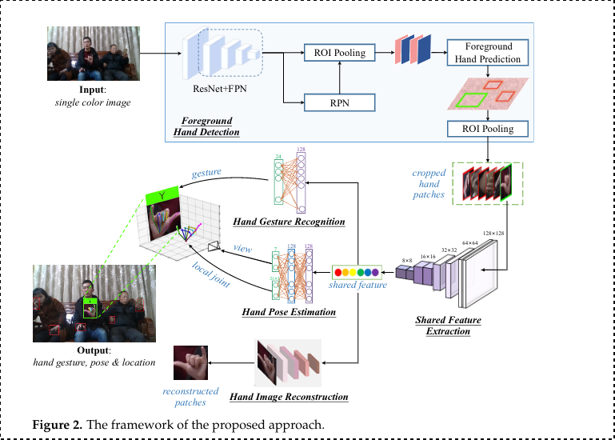

Bhavya Goel
July 14, 2021
Semi Supervised Joint Learning for Hand Gesture Recognition
Features
- This is for Static Gestures
- Hand Gesture and Hand Pose Recognition
- Semi-Supervised learning scheme used to solve the problem of lacking proper annotation
- 3-D Hand Pose with foreground hand, and hand gesture
- Unconstrained environment dataset
– Hand Posture: Only classify in classes
– Hand Posture: positions of finger joints, view point, rotation, scale and so on.
Semi-Supervised Scheme
-
Knowledge Transfer: Transfer annotation by extracting shared features from hand gesture to hand pose and vice versa.
-
Image Reconstruction: Enocdes input to low dimensional latent code and then reconstructs the image.
-
Traditional Methods-
- Low Level
- SIFT - Scale Invariant Feature Transform
- Image Moments
- Gabor Filters - For texture analysis, checks whethere there is a particular frequency content in a specific direction in a localized region.
- CNN
- deep features extracted from cloud points for SVM Classification
- stacked denoising auto-encoders
- sof attention mechanism
- Low Level
– Graph Convolution Network
- Complex Environment- In a complex environment necessary to separate hand
- Skin color
- SVM Classifier based on HOG Feature (Histogram Oriented Gradients)
- combining deep and shallow layers
Approach
- Foreground hand detection
- shared feature extraction
- hand gesture recognition
- hand pose estimation
- hand image reconstruction
Framework
- Stage 1 (Separate Foreground hands from Background)
- Extract background hands with foreground using FPN (Feature Pyramid Netowrk), FPN takes last 4 stages of ResNet as input and generates the multi-level feature maps.
- Region Proposal Network(RPN) takes multi-level feature as input and generates set of region proposal
- ROI layer extracts features for each region proposal, then foreground hand predics whether it is foreground or background, hence refines the selection more.
- Stage 2 (Shared Feature Extraction)
- lighweight CNN
- constructed using inversted residual blocks
- intermediate expansion layer in the block uses lightweight depth-wise convolutions
- size of each cropped hand 256x256x3
- multiple inverted residual blocks, resulting 8x8x1280
- generate latent code with Guassian Distribution
- shared feature fed to 1x1 conv it converts 120 to 128, estimating the parameters of gaussian distrib. of latent code
- Stage 3a (Hand Gesture Recog)
- 8x8x128 converted to 512 size,
- 512 to num classes, and finally softmax
- cross entropy loss
- Stage 3b (Hand Pose Estimation) Reference1
- 21 Hand Joints used to detect the hand pose
- Used reference to detect 3D hand pose
- [Orthogonal Projection] 2D projection of the 3D hand is taken, and origin is the root of middle finger.
- 3D Rotation Group
Hand Image Reconstruction
Reference2
- Variational Autoencoders
- L1 loss and KL (Kullback-Lieber loss) used to calculate the loss of reconstruction
Semi-Supervised
$$ \ L = \lambda_1L_{detection}+\lambda_2L_{gesture}+\lambda_3L_{rel}+\lambda_4L_{view}+\lambda_5L_{recons} $$
- As all the datasets doesn’t have all the annotations, there significance is turned on or off accordingly.
Research paper
-
Zimmermann, C.; Brox, T. Learning to estimate 3d hand pose from single rgb images. In Proceedings of the IEEE International Conference on Computer Vision, Venice, Italy, 22–29 October 2017; pp. 4903–4911.M ↩︎
-
Xu, C.; Cai, W.; Li, Y.; Zhou, J.; Wei, L. Accurate Hand Detection from Single-Color Images by Reconstructing Hand Appearances.Sensors 2020, 20, 192. CrossRef ↩︎